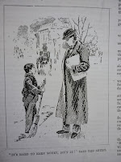
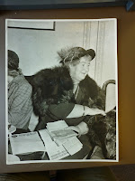
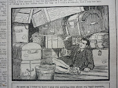

{kind=link}
Last night I picked
the final piece of paper from my newly emptied attic floor and placed
it in Box 16 of 22 (labelled Amalgamated Press serials 1931-1935,
print and manuscript, since you ask). I turned the page and this was how the story
began.
WOMEN WORSHIPPED HIM!
MEN ADMIRED AND ENVIED HIM!
WHO WAS THIS HANDSOME
STRANGER WHO CAPTURED ALL HEARTS?
{kind=link}
Well,
the answer to that question was not Herbert Allingham – the author of The Spell of a Rogue and about 300 other magazine serial stories. The issue of The Oracle that I was packing away was published in March 1934 when Allingham was approaching the end of his fifty year working life. Less than two years later Allingham would be
dead but neither The Oracle nor any of the other cheap papers would mention the fact – let
alone pay tribute to his lifetime of work. The first instalment of Allingham's first serial story had been published in 1886, the last would be completed posthumously in 1937. Allingham was just one of the hundreds of anonymous writers and artists whose existence went
unacknowledged through the Great Age of Print.
What Great Age of Print, you ask? I'm canvassing for that title to be applied to the period that began in
1867. The passing of the Second Reform Act in that year led directly to the
Education Act of 1870 which established the principle of compulsory
state education for all. Literacy levels continued to increase, slowly, patchily,
until in the decade immediately before the First World War when it was possible to claim that 100% nominal
literacy had been achieved. The 1851 census had revealed that Britain had become the first country in the world where more people lived in towns than in the country. I claim the Great Age of Print as those later decades when the social changes of second generation urbanisation were beginning to alter people's leisure
expectations, their incomes and their spending patterns, encouraging them to enjoy new
types of entertainment. The Great Age of Print arrived when
post-industrial revolution developments in both transport
infrastructure and print technology made it possible for more books, posters, periodicals and pamphlets to be distributed more
quickly, more cheaply and more numerously than ever before.
1867 was
the year that Herbert Allingham was born. It was also the year that
Karl Marx completed the first volume of Das Kapital and it was
within a few years of the births of Allingham’s significant
contemporaries Lords Northcliffe (1865) and Rothermere (1868), founders of The Daily Mail and owners of The Times and
Arthur Pearson (1866) necessary rival to the Harmsworth brothers and
founder of the Daily Express. I would contend that it was these men who were decisive in establishing the powerful newspaper corporations of
the twentieth century – demonstrating par excellence the patterns of capitalism as described by Marx. During the
1930s, the last decade of Allingham's life, the most intense rivalry existed between
the working class newspapers – the Daily Mail, Daily Express,
Daily Herald, Daily Mirror. Newsprint was a vibrant, nationally important
industry.
That's
history now and it's well-known history. What is less
well-known is that the initial capital that funded those Harmsworth
and Pearson papers came from the penny weeklies produced for the newly literate households towards the end of the c19th. The Harmsworth brothers began their career with the publication of Answers in 1888. They followed it up with the half-penny Comic Cuts and the Illustrated Chips in 1890: Pearson countered with Pearson's Weekly. New titles followed at the rate of two or three a year. It was the millions of pennies and halfpennies spent on these proliferating papers by the 'board-schoolers', the second and third generation urbanised families, that funded
their publishers' c 20th entry into newspapers. What did the papers offer that was so attractive to those hard-pressed working people? Itty-bitty factoid information on the Tit-Bits model, stupendous marketing offers, jokes, cartoons and serial fiction. Who wrote the fiction? It was Herbert
Allingham and his many anonymous peers.
 |
| from an Allingham story of 1894 "It's hard to earn money, isn't it?" said the artist |
{kind=link}
{kind=link}
{kind=link}
Herbert
Allingham's fiction was never published in book form. Book form
implies a certain permanence whereas these half-penny, penny, tuppenny
papers were always intended to be ephemeral. Readers were encouraged to pass their copy to a friend and buy another. The editor arranged their reading and re-reading choices for them and I believe that the readers
of these papers understood the conventions of the game. I think they knew when they were being signposted to an
Impersonation Story (such as The Spell of a Rogue), a Mother-Love Story or a
Convict Story – all recognised types which an editor might
ask Allingham and his fellow 'common writers' to provide. Then they made their choice and paid their penny.
There was another practical aspect to this authorial anonymity. Cheap papers running on a tight budget to make maximum profits might not have a wide range of contributors and busy editors felt safest with the writers they knew. There were certainly occasions in the 1930s when Allingham was supplying all three of the regular weekly serials in mass-market publications such as The Home Companion, The Oracle, The Family Journal, Poppy's Paper and The Miracle (all of them managed by the same editor). Including his by-line wouldn't have been politic.
There was another practical aspect to this authorial anonymity. Cheap papers running on a tight budget to make maximum profits might not have a wide range of contributors and busy editors felt safest with the writers they knew. There were certainly occasions in the 1930s when Allingham was supplying all three of the regular weekly serials in mass-market publications such as The Home Companion, The Oracle, The Family Journal, Poppy's Paper and The Miracle (all of them managed by the same editor). Including his by-line wouldn't have been politic.
 |
| Allingham's sister-in-law Maud Hughes wartime editor of Woman's Weekly then founder of The Picture Show, the first 'fan' magazine in the UK |
{kind=link}
| Allingham's father, James at his desk in Fleet Street He made money from the evangelical revival then became advertising agent |
{kind=link}
Fiction was different -- for the lowbrows, anyway. When Allingham himself was a penny paper editor (London Journal 1889 – 1909) he expended a degree of ingenuity pretending that his first and most sensational drama-story (A Devil of a Woman 1893, subsequently re-printed at least seven times) was REAL and that the anonymous author was an actual participant. After all it's more fun to live in a world where such highly-coloured adventures might be happening around the corner ... Many devotees of soap operas such as The Archers or EastEnders prefer not to accept that the characters are played by actors, let alone that the episodes have been professionally scripted.
Allingham's
readers were not stupid. They were abiding by a set of conventions
that suited their tastes and circumstances. Readers of the Oracle, for instance, were described by Richard Hoggart in his classic study The Uses of Literacy. Hoggart does sometimes struggle not to sound patronising but his intentions are clear: these were people to be respected; people who were taking their cultural pleasures in the way that suited them. If there
had been any sustained reader demand to be given the names of their favourite authors,
editors would soon have responded. In the 1920s, for instance, at
attempt was made to glitz-up Allingham's reprints by attributing his stories to current celebrities – Houdini, Norma Talmadge, Fatty Arbuckle,
Tom Mix, Sessue Hayakawa. It was relatively short-lived. “Films
in Film Fun, no room for me,” commented Allingham sadly in
1927 when this market for pseudonymous reprints faltered.
Herbert
Allingham had been born into a print-trade household and had an
intense interest and expert view of his section of the periodical
world. He referred to his readers as the 'common people' but never belittled or failed to do his best for them. He saw it as his duty to understand and reflect his readers' hopes, fears and dreams and his choice of narrative formulae to
relieve or comfort them is illuminating -- as is the subtle way in which he manipulates his story themes to express the changing public mood over the
different decades of his productive life. This is fiction as journalism. There is an explicit idealisation of working folk in many of his stories which is obstinately attractive – though, as his daughter Margery once commented, when he tried to make friends in person with working people, they were apt to touch their hats and move away.
Allingham
died in January 1936. Soap opera arrived in that year and so did TV.
Radio was already installed in many people's homes and the cinema had
posed a major competitor for readers' disposable income since the end
of WW1 if not earlier. The Great Age of Print was over. In the late
1980s, when I finished my preliminary sort through these papers,
shocked to my Eng Lit. core by their formulaic construction and
clichéd language and uncertain of the commercial morality of their
publication patterns, I suggested to Herbert Allingham's daughter
Joyce that they should be given to a University with a strong Media
Studies department. By the time you read this article my newly
re-packed, re-catalogued boxes will have set off for their final home
in the University of Westminster archive.
| Herbert and Em Allingham visiting Gypsy families c 1912 |
{kind=link}
 |
| from The Amazing Exploits of Houdini Kinema Comic 1924 |
{kind=link}
| This is my biography of Allingham on Kindle or in print My PhD can be downloaded free www.fiftyyearsinthefictionfactory.com |
{kind=link}
And from 25th December to
28th, Authors Electric will be peddling dreams at a discount!
16 days to go!
{kind=link}